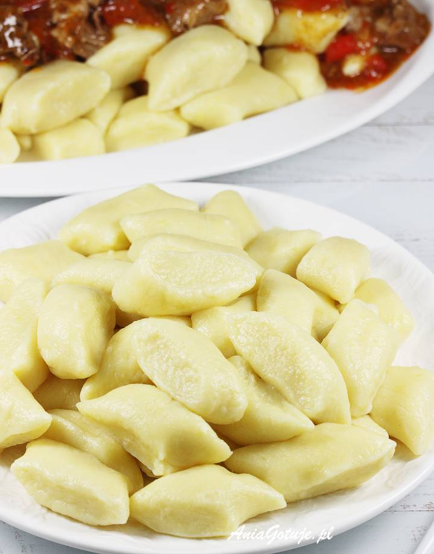

Ziemniaki obrać i ugotować w osolonej wodzie. Odcedzić i od razu rozgnieść praską na idealnie gładkie puree. Przełożyć do miski i całkowicie ostudzić.
Dodać mąkę, jajko oraz szczyptę soli. Połączyć składniki w jednolite ciasto.
Wyłożyć na stolnicę posypaną mąką i podzielić na 6 części. Z każdej części uformować wałeczek grubości kciuka, obtaczając go w mące.
Wałek lekko spłaszczyć i pociąć nożem na kawałki o szerokości ok. 1,5 - 2 cm.
Gotować partiami: wkładać na gotującą i osoloną wodę w dużym garnku i gotować przez ok. 3 minuty licząc od czasu wypłynięcia na powierzchnię lub do miękkości. W trakcie gotowania delikatnie przemieszać wodę drewnianą łyżką sprawdzając czy kopytka nie przykleiły się do dna. Wyławiać łyżką cedzakową i wykładać na talerze.
 Przepis na Youtube
Przepis na Youtube
Ziemniaki obrać i zetrzeć na tarce o małych oczkach bezpośrednio do większej i płaskiej miski. Zostawić je w misce bez mieszania, miskę delikatnie przechylić i odstawić tak na ok. 5 minut.
W międzyczasie odlewać zbierający się sok, delikatnie przytrzymując ziemniaki, nadal ich nie mieszać. Na koniec docisnąć dłonią do miski i odlać jeszcze więcej soku. Dodać mąkę, drobno startą cebulę, jajko oraz dwie szczypty soli.
Rozgrzać patelnię, wlać olej. Masę ziemniaczaną wymieszać. Nakładać porcje masy (1 pełna łyżka) na rozgrzany olej i rozprowadzać ją na dość cienki placek. Smażyć na średnim ogniu przez ok. 2 - 3 minuty na złoty kolor, przewrócić na drugą stronę i powtórzyć smażenie.
Odkładać na talerz wyłożony ręcznikami papierowymi. Posypać solą morską z młynka. Placki ziemniaczane najlepsze są prosto z patelni gdy są chrupiące.
 Przepis na Youtube
Przepis na Youtube
Ziemniaki obrać, pokroić na cienkie słupki. Opłukać i dokładnie osuszyć na ręcznikach.
Jeśli ziemniaki nie będą od razu smażone, najlepiej przetrzymać je w garnku z zimną i osoloną wodą. Przed smażeniem dokładnie osuszyć.
Podgrzać cały olej do 110 stopni C w średnim garnku. Włożyć ziemniaki i smażyć w tej samej temperaturze (można sprawdzać termometrem lub ustawić odpowiednio frytkownicę) przez około 7 - 8 minut (u mnie ogień pod garnkiem był minimalny na największym palniku). Następnie wyjąć frytki łyżką cedzakową i wyłożyć na 2 większe talerze. Odstawić olej z ognia do czasu ostudzenia ziemniaków.
Rozgrzać ponownie tłuszcz, tym razem do 175 stopni C.
Włożyć przestudzone frytki i smażyć przez około 5 minut do czasu aż ziemniaki będą lekko zrumienione (cały czas utrzymywać tę samą temperaturę). W międzyczasie można 1 - 2 razy ziemniaki przemieszać. Wyjąć łyżką cedzakową i ułożyć na ręcznikach papierowych. Od razu podawać posypując solą morską, najlepiej gruboziarnistą.
 Dodatkowe zdjęcie
Dodatkowe zdjęcie